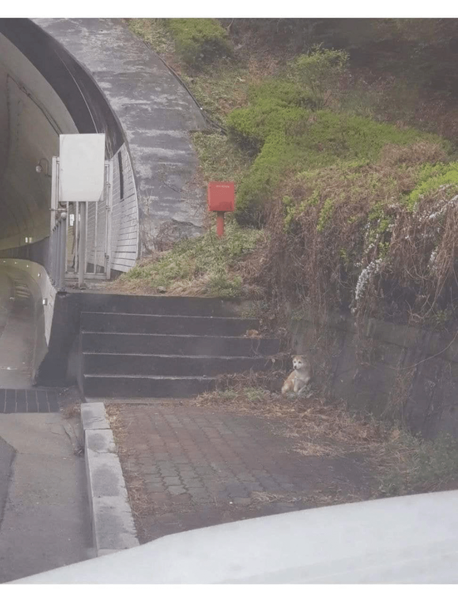
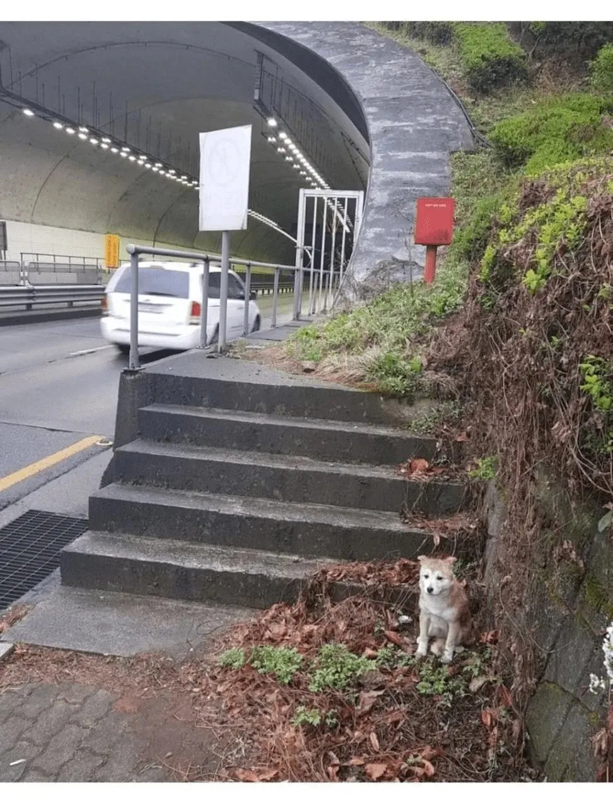
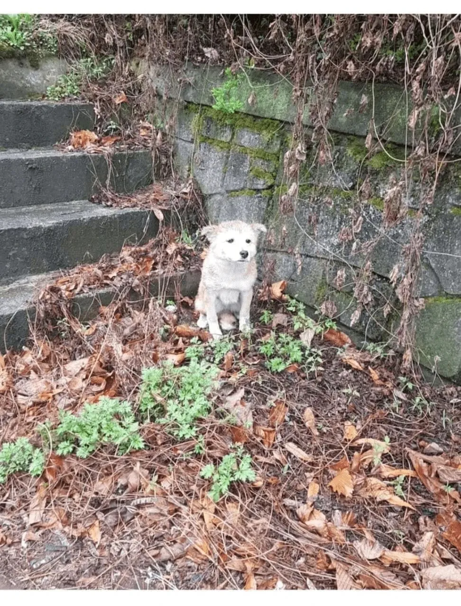
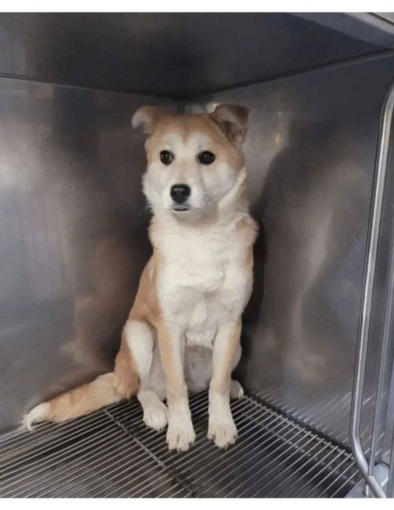
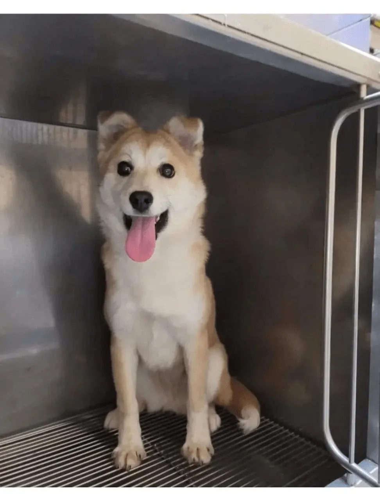
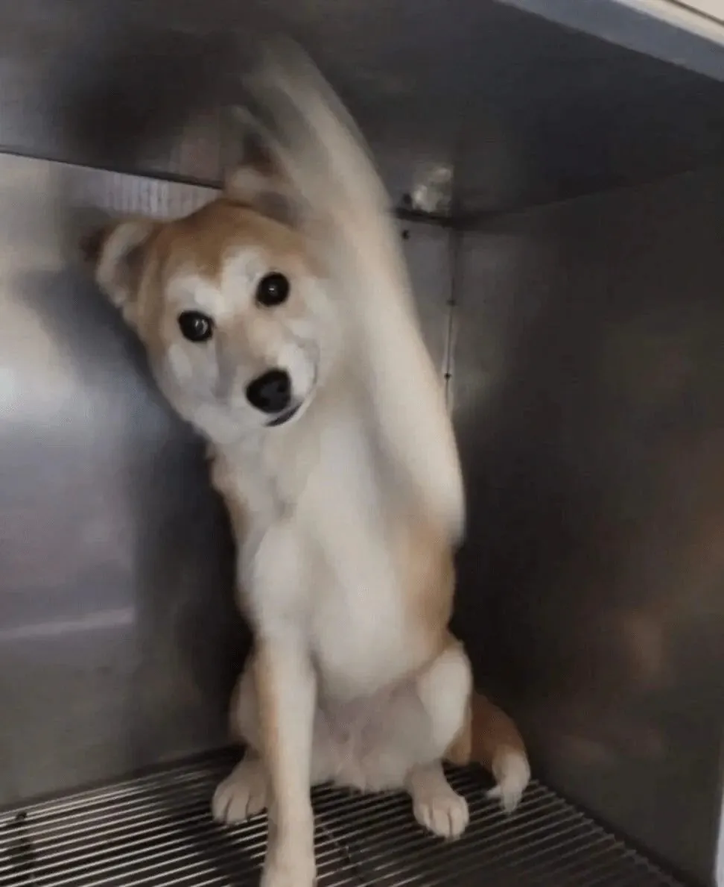
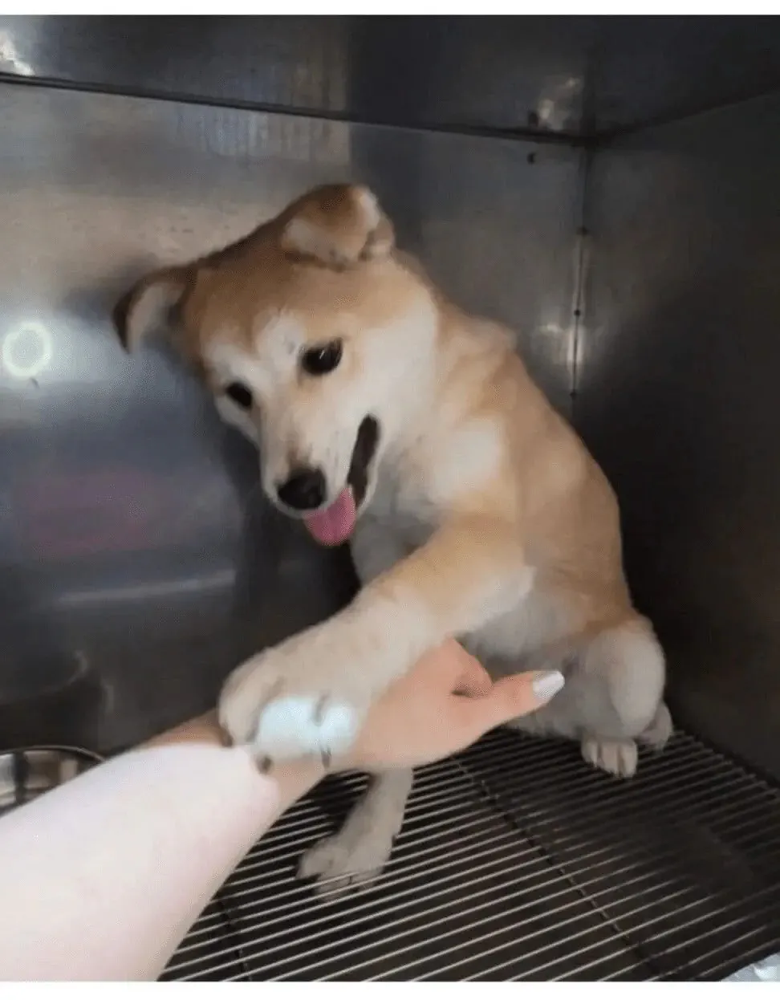
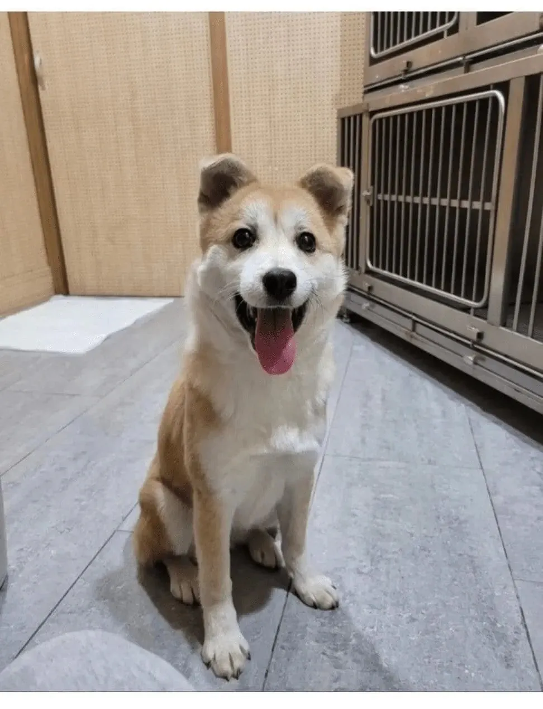
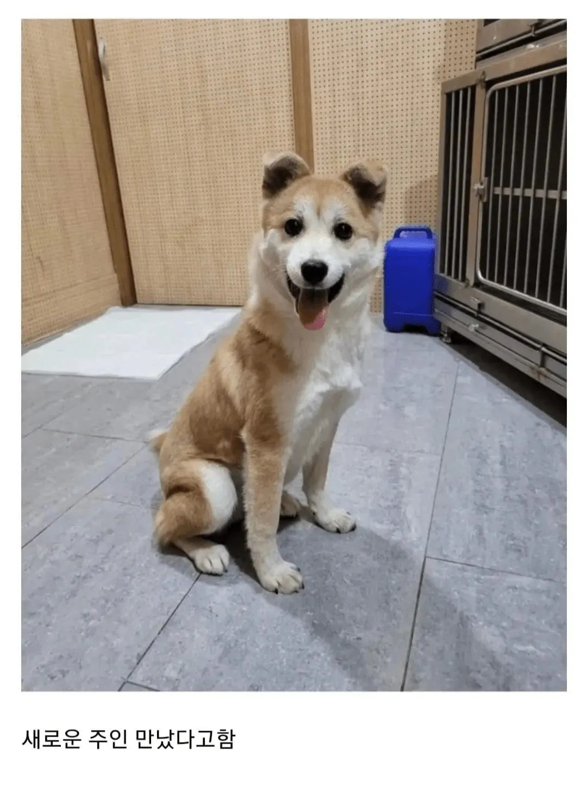
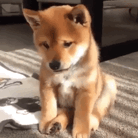

        
댓글
수집 당시 댓글 15개
게이심슨 · 13 시간 전
XiJinPink · 13 시간 전

뱅갈고양이육성중 · 12 시간 전
애기 표정 밝아지는거 봐라
가시돋친맨 · 12 시간 전
인스타에 달이라고 이름 생긴듯
싱키 · 12 시간 전
귀여웡
작은타우렌 · 11 시간 전
귀여워
거제굴톤파이리 · 11 시간 전
버린놈은 평생 레버리지 역풍 맞아라
dksldh · 10 시간 전
어쩜 저리 표정이 풍부할까
DJINN79 · 10 시간 전
헤헹~ 애 표정 밝은거 봐라 ㅋ 넘모 귀엽네
냉동블루베리 · 10 시간 전
너모귀엽당
바르고고운말쓰기 · 10 시간 전
표정 시무룩한거 불쌍한데 귀여워
치즈피자3단토핑 · 8 시간 전
간식으로 동물확대x2하고 싶네
모코모코코 · 6 시간 전
K2C1 · 6 시간 전
저거 위례에서 성남 넘어가는 터널 입구에 버려뒀던 걸로 기억하는데 새로운 주인 만나서 다행이네 지나가다가 뭐지 싶었는데
회제공량 · 1 시간 전
동물 버리는 미친 버러지 새끼들은 지들도 부모 친구 연인한테 싹 다 버림받고 비참하게 쫄쫄 굶다 객사해야함. 진짜 씨발새끼들임.